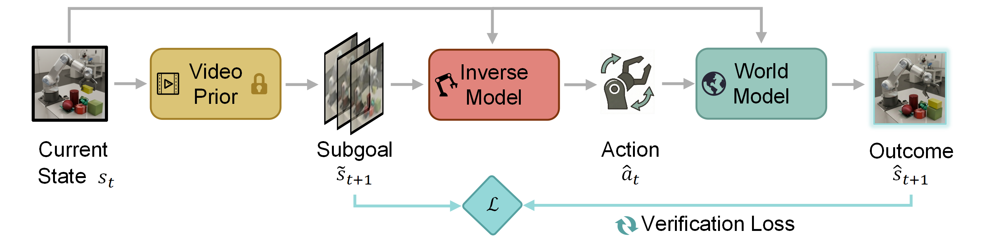
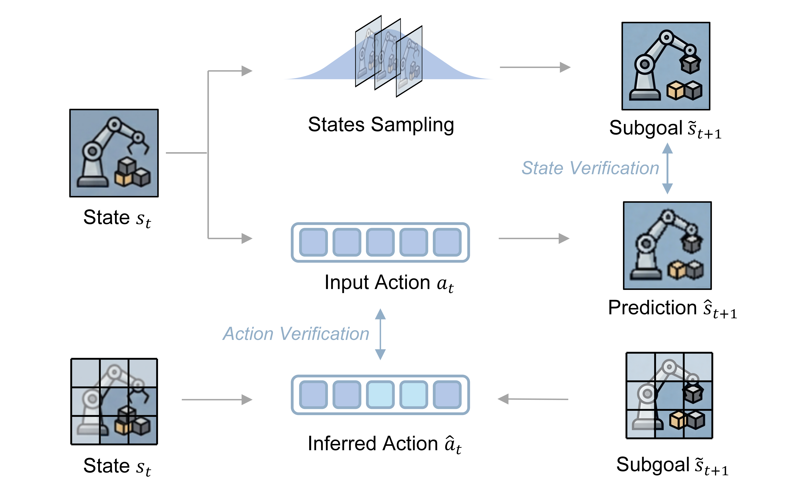
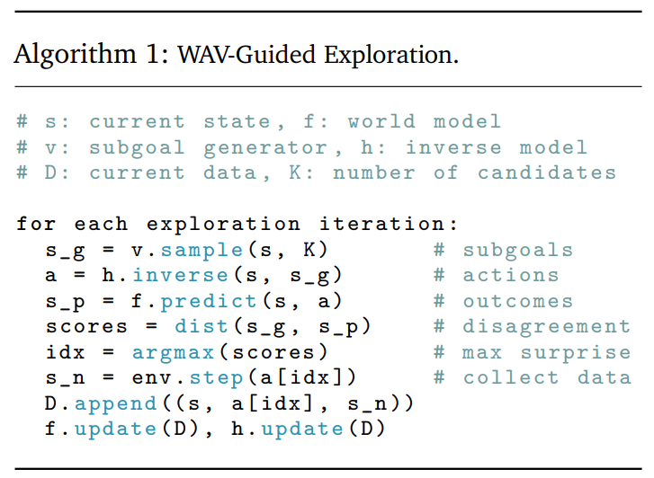
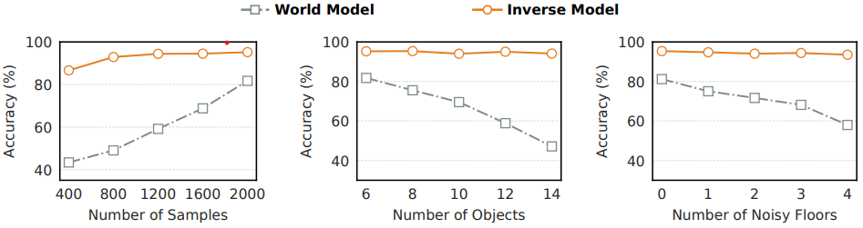
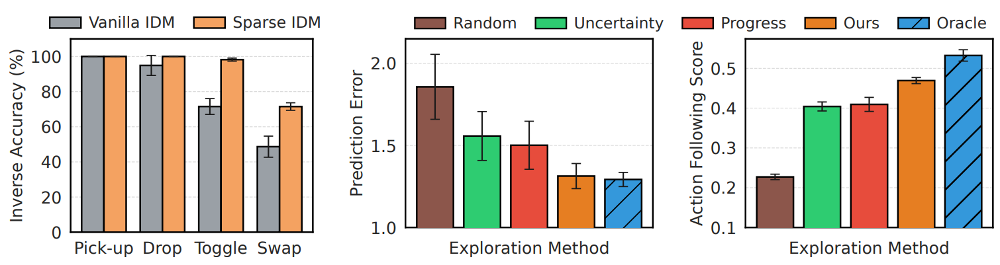
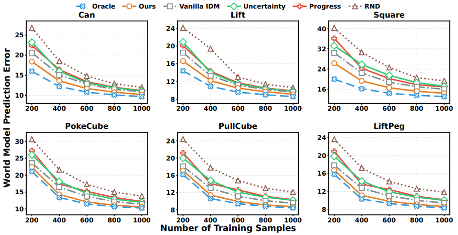
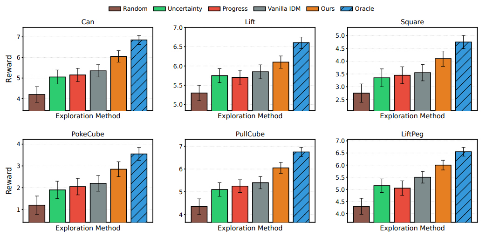
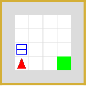

General-purpose world models promise scalable policy evaluation, optimization, and planning, yet achieving the required level of robustness remains challenging. Unlike policy learning which primarily focuses on optimal actions, a world model needs to be reliable over a much broader range of suboptimal actions, which are often insufficiently covered by action-labeled interaction data. To address this challenge, we propose World Action Verifier (WAV), a framework that enables world models to identify their own prediction errors and self-improve. The key idea is to decompose action-conditioned state prediction into two factors—state plausibility and action reachability—and verify each separately. We show that these verification problems can be substantially easier than predicting future states due to two underlying asymmetries: the broader availability of action-free data and the lower dimensionality of action-relevant features. Leveraging these asymmetries, we augment a world model with (i) a diverse subgoal generator obtained from video corpora and (ii) a sparse inverse model that infers actions from a subset of state features. By enforcing cycle consistency among generated subgoals, inferred actions, and forward rollouts, WAV provides an effective verification mechanism in under-explored regimes, where existing methods typically fail. Across nine tasks spanning MiniGrid, RoboMimic, and ManiSkill, our method achieves 2× higher sample efficiency while improving downstream policy performance by 18%.


As illustrated above, the subgoal generator $p_\phi$ and the inverse model $h_\psi$ form two complementary components for verification: the former evaluates whether a candidate future is plausible, while the latter checks whether it is reachable under an inferred action. Instead of directly estimating model error, we reformulate verification through two complementary and asymmetric factors derived from Bayes’ rule:
$$ p(s_{t+1}\mid s_t,a_t) \propto \underbrace{p(s_{t+1}\mid s_t)}_{\text{state}} \cdot \underbrace{p(a_t\mid s_t,s_{t+1})}_{\text{action}} $$
Distribution Asymmetry: State Verification via Broader Coverage of Action-Free Data Directly modeling forward dynamics requires learning action-conditioned transitions, which are sparse and expensive. In contrast, verifying state plausibility only requires learning the marginal transition model and this model can be trained from abundant action-free video data, providing substantially broader coverage of the state manifold.
Dimensionality Asymmetry: Action Verification via Lower-Dimensionality of Action-Relevant Features Verifying reachability in the full state space is challenging. However, in many tasks, actions depend only on a small subset of state features. We exploit this structure by learning a sparse inverse dynamics model, which reduces the problem from high-dimensional state matching to a simpler, low-dimensional action inference problem.
Given the two verification criteria above, we connect them into a self-improvement loop for exploration:
$$ s_t \xrightarrow{p_\phi} \tilde{s}_{t+1} \xrightarrow{h_\psi} \hat{a}_t \xrightarrow{f_\theta} \hat{s}_{t+1} $$
This closed-loop process enables self-improving exploration: the agent actively seeks out failures of its own predictions and uses them to refine its world model.

Robustness of Sparse Inverse Dynamics Models
We test forward world models (WM) and sparse inverse dynamics models (IDM) under controlled shifts:
These results highlight the reliability of sparse inverse verification across key robustness factors.

Sparse Inverse Verification for World Model Improvement
We examine the ability of models to generalize to unseen environments and improve world model learning:
Together, these experiments demonstrate that sparse inverse verification improves robustness, guides exploration, and enhances world model learning in under-explored regimes.

World Model Prediction Across Data Budgets
We evaluate world-model learning quality on RoboMimic and ManiSkill tasks by measuring next-observation prediction MSE:
These results confirm that WAV-guided exploration and sparse modeling improve the accuracy of learned dynamics under diverse conditions.

Impact on Policy Learning via Imagination
We evaluate whether improved world models translate to stronger downstream policy performance:
Overall, these results confirm that self-improved world models enhance both task-relevant dynamics representation and imagination-based planning.
Select an initial state and then choose an action below to compare one-step predictions from different methods and the ground truth. Green borders indicate correct predictions, red borders indicate prediction errors, and the gold border denotes the ground truth next state.

Uncertainty
Progress
Ours
Ground Truth
The videos compare world model rollouts from different curation strategies. WAV produces predictions that closely match the ground truth, while world models learned with Uncertainty and Progress often yield inaccurate or overly blurred future frames.
Uncertainty
Progress
Ours
Ground truth
Uncertainty
Progress
Ours
Ground truth
Uncertainty
Progress
Ours
Ground truth
@article{liu2026wav,
title={World Action Verifier: Self-Improving World Models via Forward-Inverse Asymmetry},
author={Yuejiang Liu and Fan Feng and Lingjing Kong and Weifeng Lu and Jinzhou Tang and Kun Zhang and Kevin Murphy and Chelsea Finn and Yilun Du},
year={2026},
eprint={2604.01985},
archivePrefix={arXiv},
primaryClass={cs.LG},
url={https://arxiv.org/abs/2604.01985},
}